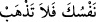
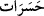

yasaklamanın sebebidir. Âyette geçen “__WORD__ yâni “kendini helak etme” ifâdesi,
ölümden kinayedir. “Hasret”, elden çıkana duyulan şiddetli hüzün ve pişmanlıktır. Sanki
kendisini yapmış olduğu bu işe sevk eden cehâlet, ansızın ortadan kalkmıştır. Hasret
kelimesinin “__WORD__ şeklinde çoğul olarak gelmesi, Peygamberimiz (s.a.)’in onların
hâllerine çok üzüldüğüne veya üzülmesine neden olan çirkin işlerinin çokluğuna delâlet
eder. Bu söz, “ona olan sevgisinden helâk oldu” ve “ona olan hüznünden öldü”
denilmesi gibidir. Mânâ şöyledir: Artık her şeyin Allah’ın istek ve irâdesiyle olduğunu
bildiğine göre onların azgınlıklarına ve küfürde ısrar etmelerine üzülerek, onların tekzip
ve inkârlarına tasalanarak kendini helâk etme. Üzülmeyesin, yâni onların nâhoş amelleri
sebebiyle çektiğin peş peşe sıkıntılar ve türlü türlü hayıflanmalar yüzünden helâk
olmayasın. Zira bunların her biri pişmanlık sebebidir. Zira sen onlara nasihat konusunda
bütün gücünü harcadın. Dâvet ve tebliğ sorumluluğunu yerine getirdin. Artık bundan
sonra sana bir zorluk yoktur. Bundan sonra zorluk, hem dünya da hem de âhirette,
onlaradır. Zira onlar senin gözünden düştüler. Senin gözünden düşenler, Allah’ın da
gözünden düşmüşlerdir. Artık onlara merhamet edecek kimse bulunmaz.
Çünkü “Allah onların ne yaptıklarını,” yâni yaptıkları çirkin işleri “biliyor.” Onları
bu yaptıklarına karşı çirkin bir cezayla cezâlandıracaktır. Zira onların bakış ve
düşünceleri nâkıs olduğu için çirkini güzel görseler de çirkin hiçbir zaman güzel olmaz.
Bilinmelidir ki kâfir insan, kendi amelinin güzel olduğunu zanneder. Allah Teâlâ şöyle
buyuruyor: “(Bunlar;) iyi işler yaptıklarını sandıkları halde, dünya hayatında
çabaları boşa giden kimselerdir” (el-Kehf, 18/104). Sonra dünyaya rağbet eden
kimse, helal-haram demeden mal toplar. Dünyanın fâni ve zâil olacağını ve henüz
dünyaya dâir arzu ve istekleri tamam olmadan bir gün dünyadan göçüp gideceğini
düşünmez. Kuşkusuz böyle bir kimseye kötü ameli süslü gösterilmiştir.
Bedeninin tüm güçleri yok olup gitti,
Ancak hâlâ arzunun peşindesin!
Yine aynı şekilde kurtuluşunu ve derecelerini cennette bulup râhat edince bununla
yetinen insana da ameli süslenmiştir. Zira bu insan da bütün cennet nimetlerinin üstünde
olan rabbiyle münâcâtın halâvet ve lezzetinden gâfil olmuştur.
Bize âşıklık ve cemâli görmenin lezzeti;
Ey zâhid! Sen git cenneti talep et dur.
Elbette ki tüm şehevâtıyla birlikte dünyanın kendisine süslü gösterildiği kimse,
kendisine derecelerle âhiretin süslendiği kimse gibi değildir. Yine âhiret ve cennet
nimetinin kendisine süslendiği kimse, Mevlâ Teâlâ’nın cemâlinin kendisine süslendiği
kimse gibi değildir. Yâni bunlar eşit değillerdir. Sen, en çok arzu ettiğine yönel. Her
güzelin ve güzelliğin kaynağı Allah’tır. Kime bir güzellik ve güzel bir şey ulaşırsa, o,